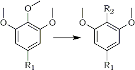

HTML by Rhodium
The 2-methoxyl group of 1,2,3-trimethoxybenzene and its 5-methyl-substituted homologue is removed under reductive electron transfer conditions and replaced with an alkyl group in a one-pot procedure.
The difficult task of removing an alkoxyl group from an aromatic ring has been accomplished so far mainly under electron transfer conditions, leading to the replacement of the alkoxyl group with a hydrogen atom1. Under such conditions, the replacement of an alkoxyl group with groups other than hydrogen, though actively investigated, has not been accomplished; as an example, anisole is one of the very few aromatic substrates bearing a potentially nucleofugic group which does not undergo cleavage nor substitution under the usual conditions of aromatic SRN1 reactions2.
1,2,3-Trimethoxybenzene (1) is known to undergo 100% regioselective demethoxylation at the 2-position by treatment with alkali metals in solvents of low polarity, i.e., saturated hydrocarbons or THF1,3-5 affording 1,3-dimethoxybenzene (2)6. Following our interest in the reductive cleavage of alkyl aryl ethers3,4, and due to the pharmacological importance of 2-alkyl-substituted resorcinols7, we have further investigated the synthetic usefulness of this reaction and developed a simple one-pot procedure allowing the replacement of the 2-methoxyl group of 1 and of its 5-methyl-substituted homologue with an alkyl group.
|
 |
|
In a typical experiment, 1 (1.0g, 6 mmol), dissolved in anhydrous THF (30 ml), was treated at RT with potassium metal (700 mg, 18 mmol) under N2 for 24h8. After cooling to 0�C, iodomethane (1.28g, 9 mmol) was added dropwise, and the mixture was stirred at 0�C for 4h. Standard work up afforded 1-methyl-2,6-dimethoxy-benzene (3) in 85% yield after distillation in vacuo.
Under such conditions, 1-ethyl-2,6-dimethoxybenzene (4, 81%) and 1-n-butyl-2,6-dimethoxybenzene (5, 70%) were prepared by reductive alkylation of 1 with bromoethane and 1-bromobutane, respectively. Extension of this procedure to 3,4,5-trimethoxytoluene (6) gave similar results: reductive alkylation with iodomethane, 1-bromobutane, and 1-bromododecane, respectively, afforded 1,4-dimethyl-2,6-dimethoxybenzene (7, 72%), 1-n-butyl-2,6-dimethoxy-4-methylbenzene (8, 56%), and 1-n-dodecyl-2,6-dimethoxy-4-methylbenzene (9, 52%); the latter is a useful intermediate in the synthesis of the natural pigment flexirubin9.
Attempts to extend the above procedure to secondary alkyl halides were unsuccessful, likely due to steric congestion. Indeed, reductive alkylation of 1 with 2-iodopropane led to the almost quantitative conversion to 2. This failure might be due either to lack of reactivity of 2,6-dimethoxyphenylpotassium toward the secondary alkyl halide or to dehydrohalogenation of the latter in the highly basic reaction medium; therefore, we have investigated in some detail the reaction of 1 with 2-bromoheptane in order to verify the eventual formation of alkene(s). Under the conditions described above (i.e. at 0�C) such alkyl halide was recovered unchanged; however, when the alkylation step was carried out at reflux temperature a mixture of heptenes was obtained and quenching with D2O led to the formation of mostly undeuterated 2 [MS: m/e (%) = M�+ 139 (16%), 138 (100%)].
This reaction represents a new entry to the reductive alkylation of substituted benzenes10. Its novelty is based on the unusual nature of the leaving group, as well as on the preservation of the aromatic nucleus; from this point of view, it resembles the formation of an aryl-metal derivative by halogen-metal exchange. Furthermore, the use of an arylpotassium derivative represents an useful synthetic alternative to the known alkylation of 2 and homologues via the regioselective lithiation at the 2-position with alkyl- or aryl-lithium derivatives7. Further work is in progress in order to extend this synthetic procedure to other electrophiles.